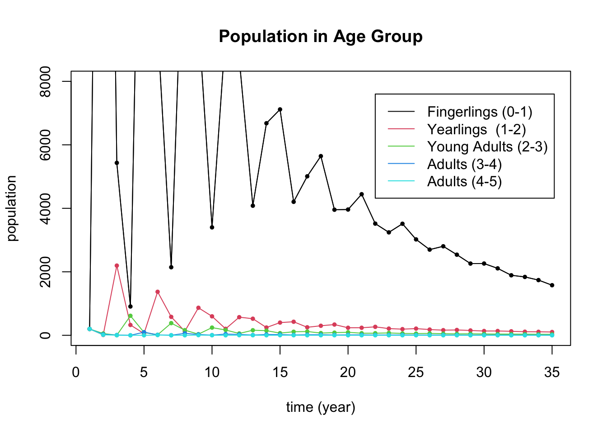

Section 8 Problem Set 8
- You can download the Rmd source file for this problem set.
8.1 Matrix Reconstruction
An unknown \(3 \times 3\) matrix \(M\) has eigenvectors and corresponding eigenvalues: \[ \mathsf{v}_1 = \begin{bmatrix} 1 \\ 2 \\ 1 \end{bmatrix}, \ \lambda_1 = 1; \qquad \mathsf{v}_2 = \begin{bmatrix} 0 \\ 1 \\ 1 \end{bmatrix},\ \lambda_2 = \frac{9}{10}; \qquad \mathsf{v}_3 = \begin{bmatrix} -1 \\ 1 \\ 0 \end{bmatrix},\ \lambda_3 = 0. \]
Without using the matrix \(M\), compute \(M^{10} \mathsf{v}\) where \(\mathsf{v} = \begin{bmatrix}7\\3\\4\end{bmatrix}\). (That is, use only the eigen-information.)
Describe all vectors \(\mathsf{v}\), if there are any, such that \(M^{n} \mathsf{v} \to {\bf 0}\) as \(n \to \infty\).
Reconstruct \(M\) from the information given.
8.2 Coyotes and Roadrunners
This summer, Macalester’s Ordway Natural History Study Area will be stocked with a population of coyotes and roadrunners so that Math 236 students can study real-life predator-prey dynamics. From similar experiments, we expect the predator-prey dynamics to be governed by linear model below. The eigenvalues of the matrix are also given. \[ \begin{bmatrix} \phantom{\Big\vert} r_{t+1}\phantom{\Big\vert} \\ \phantom{\Big\vert} c_{t+1}\phantom{\Big\vert} \phantom{\Big\vert} \end{bmatrix} =\left[ \begin{array}{cc} \phantom{\Big\vert} \frac{57}{50} & -\frac{6}{50} \\ \phantom{\Big\vert} \frac{4}{50} & \frac{43}{50} \\ \end{array} \right] \begin{bmatrix} \phantom{\Big\vert} r_t \phantom{\Big\vert} \\ \phantom{\Big\vert} c_t \phantom{\Big\vert} \end{bmatrix} = \begin{bmatrix} \phantom{\Big\vert} \frac{57}{50} r_t - \frac{6}{50} c_t \\ \phantom{\Big\vert} \frac{4}{50} r_t + \frac{43}{50} c_t \end{bmatrix}, \] The eigenvalues and eigenvectors of this matrix are: \[ \begin{array}{lcl} \lambda_1 = \frac{11}{10} = 1.1, & \qquad & \lambda_2 = \frac{9}{10} = 0.9 \\ \mathsf{v}_1 = \begin{bmatrix} 3 \\ 1 \end{bmatrix} && \mathsf{v}_2 = \begin{bmatrix} 1 \\ 2 \end{bmatrix} \end{array} \]
A = cbind(c(57/50,4/50),c(-6/50,43/50))
eigen(A)## eigen() decomposition
## $values
## [1] 1.1 0.9
##
## $vectors
## [,1] [,2]
## [1,] 0.9486833 0.4472136
## [2,] 0.3162278 0.8944272If \(r_0 = 10\) roadrunners and \(c_0 = 15\) coyotes are introduced to the area, then give closed formulas for the population of coyotes \(c_t\) and roadrunners \(r_t\) after \(t\) years.
In the long-term, in this model, what is the ratio of roadrunners to coyotes?
When another college tried the same experiment in their Arboretum, they introduced \(r_0 = 5\) roadrunners and \(c_0 = 10\) coyotes and both populations died off (as is verified in the computation below). Explain why this happens using the eigenvalues and eigenvectors.
A = cbind(c(57/50,4/50),c(-6/50,43/50))
v = c(5,10)
for (i in 1:100) {v = A %*% v}
v## [,1]
## [1,] 0.0001328069
## [2,] 0.00026561408.3 Hunt Creek
Age-structured population models like we saw in the Spotted Owl Example are often called Leslie Matrices, named after the British ecologist P.H. Leslie. Here is the Leslie Matrix of a population of brook trout in Hunt Creek in Michigan. The population is categorized into 5 age categories: fingerlings (0,1), yearlings (1-2), young adults (2-3), adults (3-4), and adults (4-5). Right now the population is seen to be dying off.
The vector \(p_t\) denotes the population at year \(t\) broken into the 5 age categories: \[ p(t) = \begin{bmatrix} f_t \\ y_t \\ ya_t \\ a1_t \\ a2_t \end{bmatrix} \] and the matrix \(L\) gives next year’s population from this year’s population: \(p_{t+1} = L p_t\). Below is the Leslie matrix for this example.
\[ \begin{bmatrix} f_{t+1} \\ y_{t+1} \\ ya_{t+1} \\ a1_{t+1} \\ a2_{t+1} \\ \end{bmatrix} = \begin{bmatrix} 0 & 0 & 37 & 64 & 82 \\ 0.06 & 0 & 0 & 0 & 0 \\ 0&0.28 & 0 & 0 & 0 \\ 0&0&0.16& 0 & 0 \\ 0&0&0&0.08& 0 \\ \end{bmatrix} \begin{bmatrix} f_t \\ y_t \\ ya_t \\ a1_t \\ a2_t \end{bmatrix} \]
L = cbind(c(0,.06,0,0,0),c(0,0,.28,0,0),c(37,0,0,.16,0),c(64,0,0,0,.08),c(82,0,0,0,0.00))The trout population in the creek is known to be dying off largely due to poisoning by the insecticide rotenone. The model demonstrates this behavior here, as can be seen in the folowing plot, which starts with 200 trout in each age group. You shouldn’t need to edit this plot.
start = c(200,200,200,200,200) # the starting distribution
N = 35 # N is the number of iterations
X = matrix(0,nrow=5,ncol=N) # Store the results in a 3 x N matrix called X
X[,1] = start # put start in the first column of X
# loop N times and put your results in X
for (i in 2:N) {X[,i] = L %*% X[,i-1]}
# Then plot the results
t = seq(1,N) # time
plot(t,X[1,],type='l',col=1,ylim=c(0,8000),ylab="population",xlab="time (year)",
main="Population in Age Group")
for (i in 1:5) {
lines(t,X[i,],col=i)
points(t,X[i,],col=i,pch=20,cex=.8)}
legend(22, 7600, legend=c("Fingerlings (0-1)", "Yearlings (1-2)", "Young Adults (2-3)","Adults (3-4)","Adults (4-5)"), col=1:5, lty=1)
By hand, multiply the matrix vector product \(L x(t)\) above and use it to give formulas for \(f_{t+1}, y_{t+1}, ya_{t+1}, a1_{t+1}, a2_{t+1}\) in terms of \(f_t, y_t, ya_t, a1_t, a2_t\). Use these formulas to give the meaning of the values 37, 64, 82, 0.06, 0.28, 0.16, 0.08 that appear in this matrix.
Compute the eigenvectors and eigenvalues of \(L\) and relate what you find to population dynamics. In particular, use the eigen-information to
- Give the overall population growth rate.
- Give the limiting age distribution: that is, the long-run distribution of the population in the different age categories. Give your answer as proportions which sum to 1.
- You are seeking funding from the Michigan DNR to support a cleanup effort. As part of your proposal, you argue that you believe that such a cleanup will most impact the youngest fish and will improve the survival rate of fingerlings to yearlings. Figure out (by trial and error) how high this survival rate will need to grow in order for the population to stop dying off. Justify your answer with eigenvalues and a plot. You should be able to duplicate the code for the plot above (after changing the matrix).
8.4 Halverson Numbers
We will look at the Fibonacci example on Monday (11/8) in class. This is very much like it except that the calculations are easier. In that problem we start with a matrix \(F\) that generates the Fibonacci numbers and used it to find a closed-formula formula \(f_n\) for the \(n\)th Fibonacci number. Here you are to follow the same process to find a formula \(h_n\) for the nearly-as-famous Halverson numbers.
The Halverson numbers are defined by \(h_0 = 0\), \(h_1 = 1\), and \(h_n = 3 h_{n-2} + 2 h_{n-1}\). They start out as \(0,1,2,7,20,61,182,547,1640,4921,14762\).
Find a matrix \(H\) so that \(H \begin{bmatrix} h_{n-1} \\ h_n \end{bmatrix} = \begin{bmatrix} h_{n} \\ h_{n+1} \end{bmatrix}\).
Find the eigenvalues and eigenvectors of \(H\).
Use the eigenvalues and eigenvectors to find a closed-formula for \(h_n\).
Show that your formula works to produce \(h_{10} = 14762.\)